Wujudkan Generasi Emas melalui Pemenuhan Gizi Nasional
Membangun masa depan Indonesia yang lebih sehat, cerdas, dan produktif melalui program nutrisi terintegrasi yang transparan dan akuntabel.

Membangun masa depan Indonesia yang lebih sehat, cerdas, dan produktif melalui program nutrisi terintegrasi yang transparan dan akuntabel.
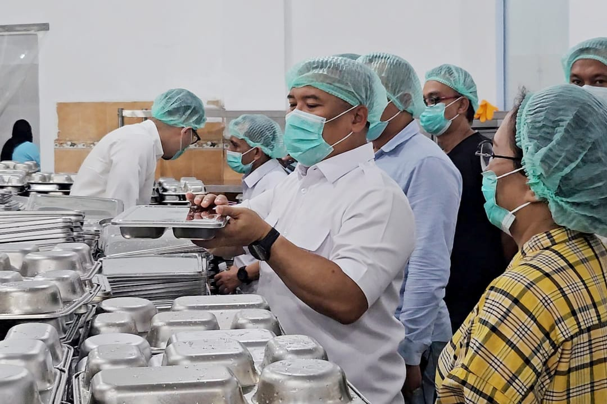

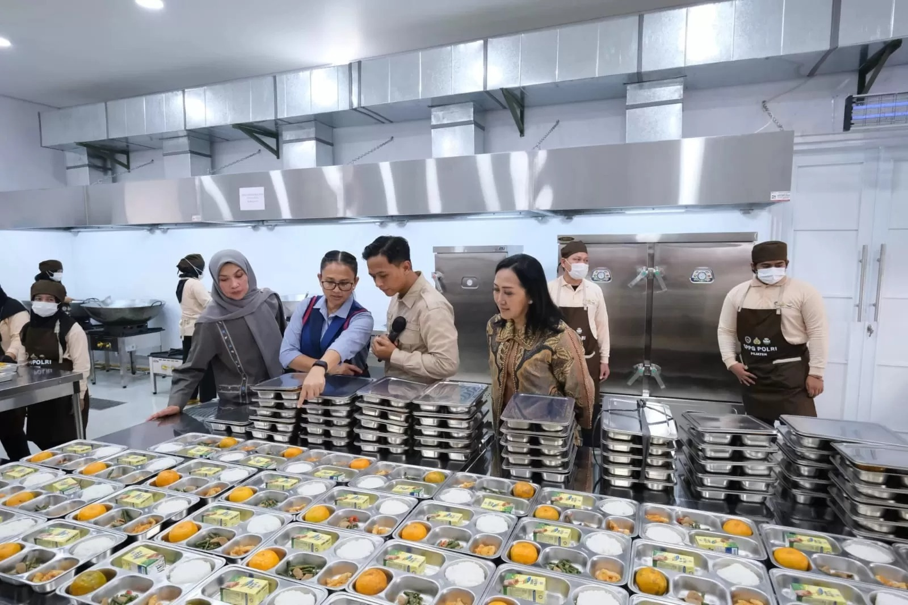
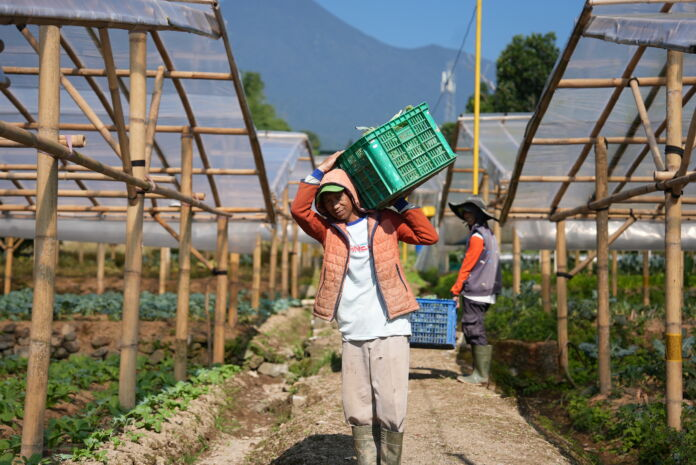
Mewujudkan generasi emas Indonesia melalui pilar strategis yang transparan dan akuntabel.
Penyediaan asupan gizi seimbang bagi siswa sekolah untuk meningkatkan kualitas tumbuh kembang nasional.
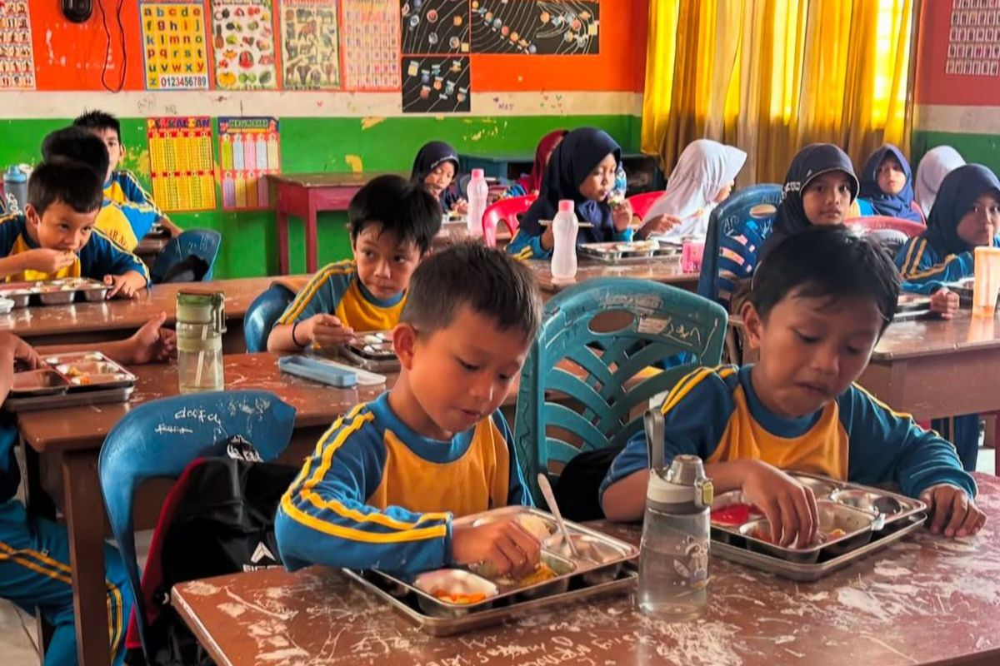
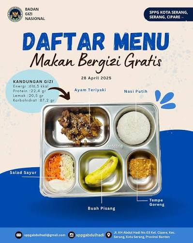
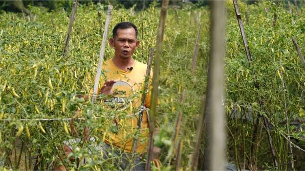
Menjamin setiap rupiah anggaran program tersampaikan tepat sasaran melalui pengawasan ketat.
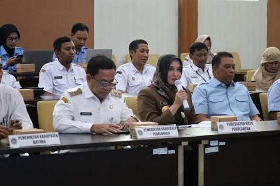
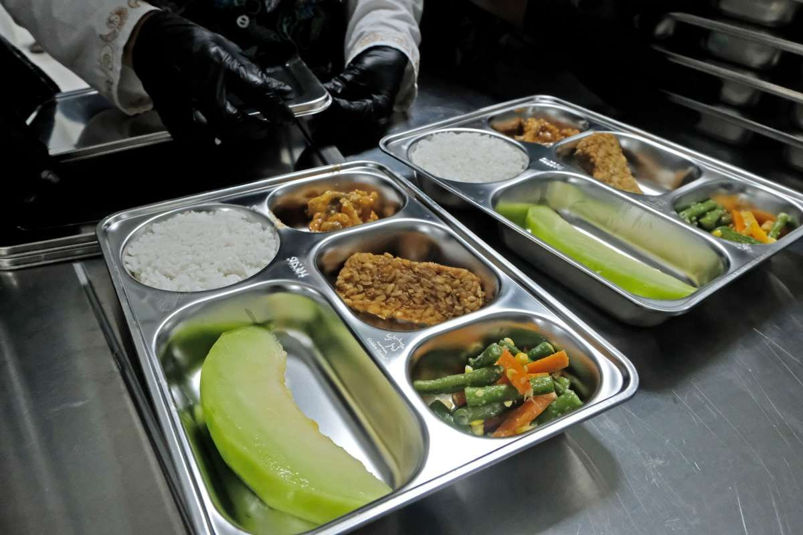
Modernisasi sistem birokrasi dan operasional untuk efisiensi distribusi gizi di seluruh pelosok.
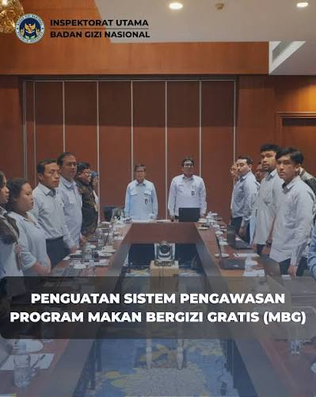
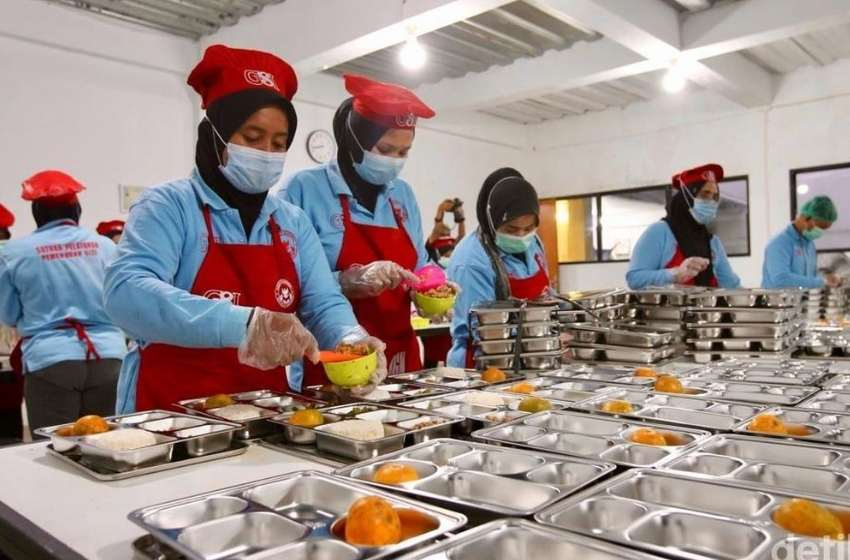
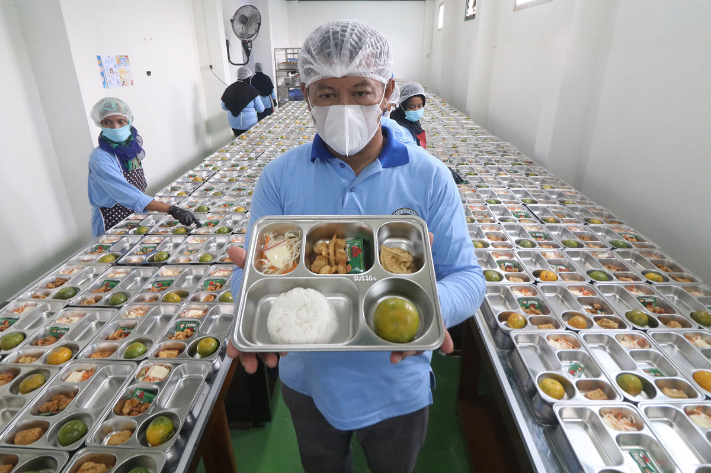
Keterbukaan informasi data sebaran gizi secara real-time yang dapat dipantau langsung masyarakat.
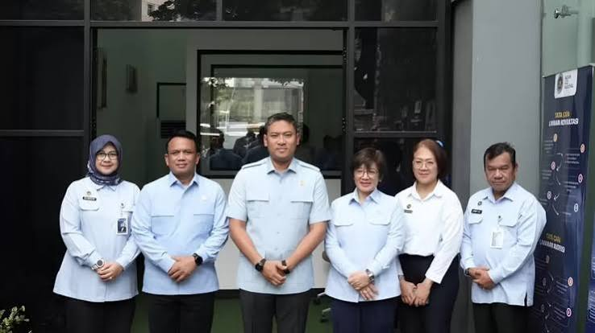
Kami hadir sebagai institusi strategis yang berdedikasi penuh dalam mengelola dan memastikan ketersediaan asupan nutrisi berkualitas bagi seluruh lapisan masyarakat Indonesia, mendukung terciptanya sumber daya manusia yang unggul.
Perpres No. 83 Tahun 2024Pemberian makanan bergizi harian bagi seluruh siswa sekolah di Indonesia.
Target balita dan anak-anak prasekolah untuk pencegahan stunting sejak dini.
Intervensi gizi krusial pada 1000 hari pertama kehidupan (HPK).
Komitmen kami dalam menciptakan sumber daya manusia Indonesia yang berkualitas sebagai fondasi bagi masa depan generasi yang sehat, cerdas, dan tangguh.
Meningkatkan kualitas asupan nutrisi harian masyarakat.
Menurunkan angka kesakitan dan kematian akibat gizi buruk.
Mendukung fokus belajar siswa melalui pemenuhan gizi.
Efisiensi anggaran kesehatan melalui langkah preventif.
Mendorong produktivitas ekonomi nasional masa depan.
Kolaborasi pakar nutrisi, akademisi, dan tenaga profesional untuk memastikan keberhasilan inisiatif nasional.
Akses data spasial sebaran program pemenuhan gizi secara transparan di seluruh wilayah Indonesia.
Mekanisme pelaksanaan Program Makan Bergizi dilakukan melalui Satuan Pelayanan Makan Bergizi (SPMB) yang tersebar di berbagai wilayah. SPMB bertanggung jawab dalam pengadaan bahan baku lokal, pengolahan makanan sesuai standar gizi, hingga pendistribusian ke sekolah-sekolah dan kelompok sasaran lainnya dengan pengawasan ketat dari Badan Gizi Nasional.
Pemberian makanan dilakukan secara terjadwal langsung ke satuan pendidikan atau titik layanan yang dikoordinasikan bersama pihak sekolah dan tim pengawas gizi setempat.
Pada bulan puasa, distribusi makanan disesuaikan menjadi paket makanan berbuka puasa (takjil/makanan sahur/berat) yang dapat dibawa pulang oleh siswa atau kelompok sasaran untuk dikonsumsi di rumah.
Konsep pendistribusian disesuaikan dengan infrastruktur sekolah di berbagai daerah Indonesia yang beragam, sehingga sistem kemasan higienis dinilai lebih efektif, merata, dan terjaga kebersihannya.
Ya, petunjuk pelaksanaan (juklak) dan petunjuk teknis (juknis) secara berkala disosialisasikan dan didistribusikan kepada pemerintah daerah serta instansi terkait untuk kelancaran pelaksanaan program.
Badan Gizi Nasional kini terhubung dengan SP4N LAPOR! untuk menerima pengaduan dan laporan Anda secara cepat, transparan, dan terintegrasi.
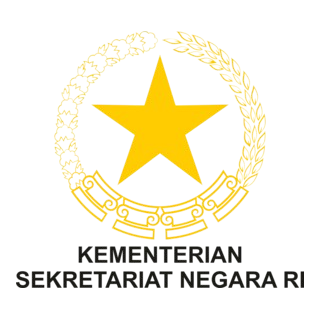
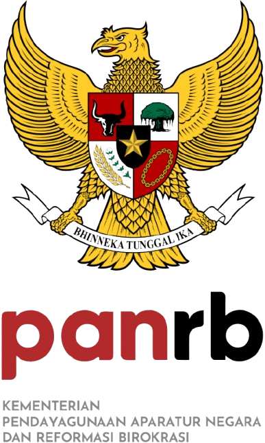
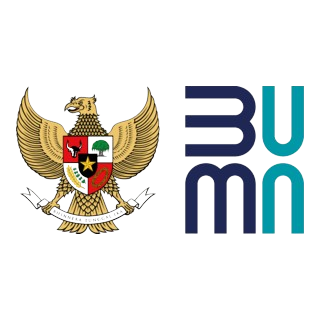
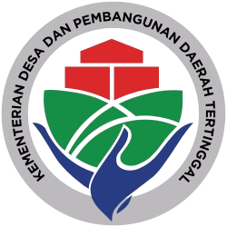
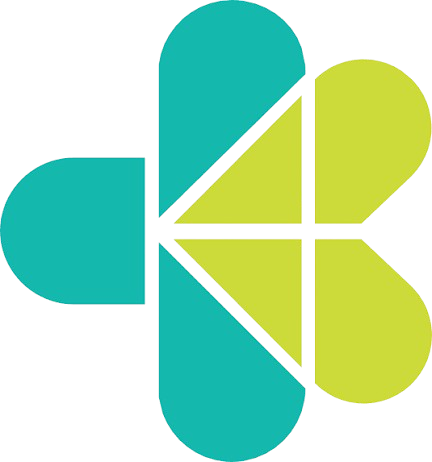
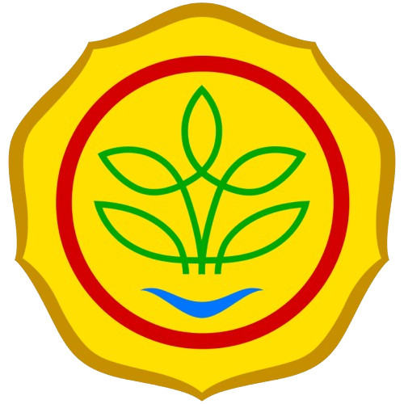
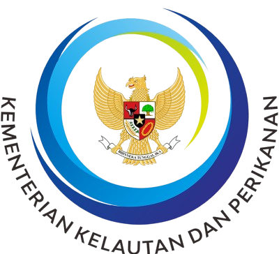